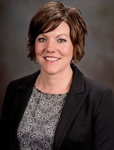

Professional Communication
Professor Brandi Quesenberry
TR 2:00-3:15 Pamplin 2002
Education
B.S in Speech Communication- Radford University
M.S in Corporate and Professional Communication - Radford University
Professional Biography
Brandi's professional career started in 2001 with a graduate teaching fellowship at Radford University teaching public speaking to 50 students each semester. During this fellowship she was designing class curriculum which helped her receive her role with Virginia Tech starting in 2004. She began as a Communicatin Lab Associate Director, where she oversaw undergraduates and graduate students, trained them and assisted students with creation of marketing strategies and materials. She still currently holds this role, 14 years later. She is also now the director of public speaking of an average of 20 undergraduate classes. She facilitates weekly team meetings with the graduate teaching assistants, plans and implements trainings, complete formal evaluations and responds to many public speaking issues. She has also been an advanced instructor since 2003 focusing in professional and speech communication.
During Brandi's 15 years here at Virgnia Tech, she has taught the following classes:
Communication Skills I
Communication Skills II
Public Speaking
Virtual Presentations with Professional Focus
Oral Commmunication Center Practicu,
Group Processes & Presentations
International Communication
Along with the many classes she has taught and roles she has taken on, Brandi also has numerous conference presentations, publications, presentations, honors and activities. She also has done a little bit of research, primarily public speaking based. One of her biggest accomplishments was in the Fall of 2011 where she received the Communication Centers Top Panel Award.
Course Description
Professional communication is a 3000 level class with the objective for students to understand the role of communication principles in business and professional settings. Students will be able to demonstrate competence in professional extemporaneous speaking, appropriate for specific professions and contexts. They will also demonstrate differences in approaches to professioal public speaking in traditional versus virtual presentation venues. Also be able to apply interpersonal, intercultural, organizational, leadership, and persuasive presentation skills necessary for team projects. Also identify ethical communication practices in business and professional settings. Finally, students will exhibit effective interviewing strategies for interviewees and interviewers.
Interests
Brandi, in her free time likes to be active and spend her times outdoors. She has a puppy named Halle who she spends a lot of her time with. They will go to the river and on hikes together. When she is not with her dog or spending long hours working, she enjoys yoga classes. She likes to remain active in her free time.
My Opinion
Brandi is one of my favorite professors I have had here at Virginia Tech. The first class she told us that she knows life happens and to just always be honest with her, and she will work with us. If we had a busy week, let her know and we can work with the deadlines for her class. I really respected that and felt that she understood us as students and want to see us achieve. Brandi is also one of the younger teachers that I have had, and I think that helps us all to build an easier relationship with her. The class is only 22 students, where we have all become good friends. There is a lot of chance for open discussion in class, and the relationships built causes to a class of no judgements, constructive critcism and extreme support.
The class has focused a lot on developing professionalism in the workforce. It has been very helpful material, but being a senior I wish that I took this class last year. The timeline of the class could have been a little better. We had a resume and interview lesson, but it was a few days later than the career fair here on campus. What I learned in class was very helpful to helping me land my dream job, but wish that I could have received the resume help a few days earlier to hand them out to companies. I really enjoyed having public speaking assignments, they have helped me build confidence in public speaking and I now feel more prepared to talk to anyone about anything, thanks to this class. I am looking forward to using my newfound professionalism in the real world, and thanks to this class I now feel prepared.
My grade in this class easily reflects my interest in what I have been learning. I have worked hard to learn the most professionalism possible in this class through in class assignments, discussions and many textbook readings. Despite my good grade, I have earned more than an A, but life skills that will stick with me forever.